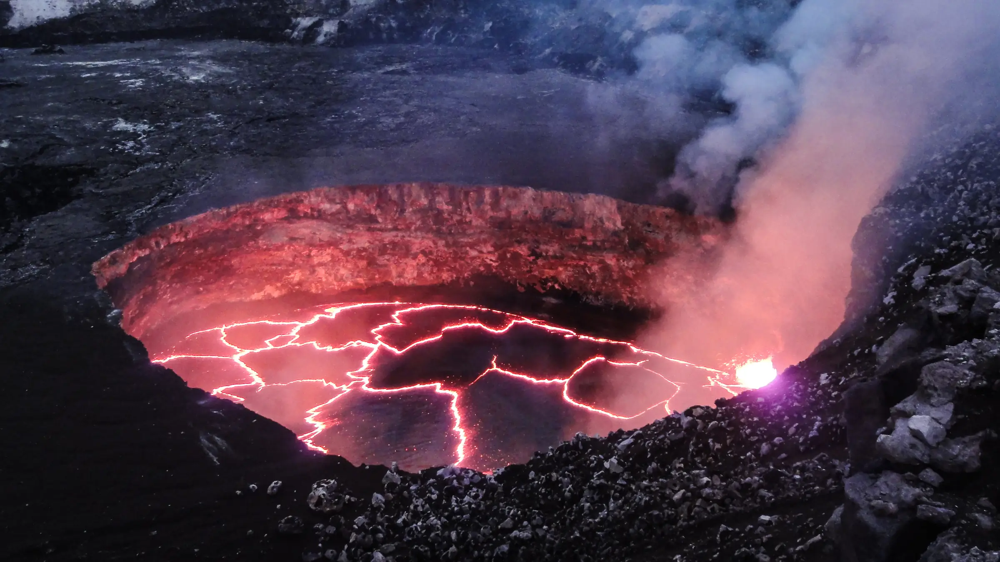
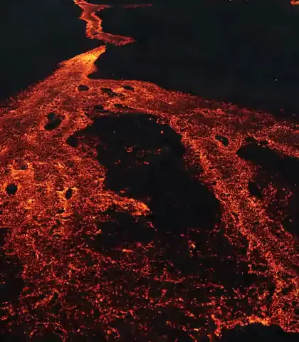
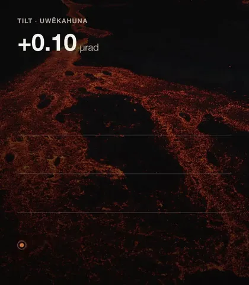
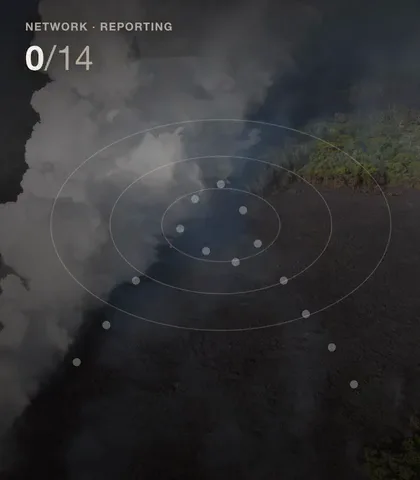
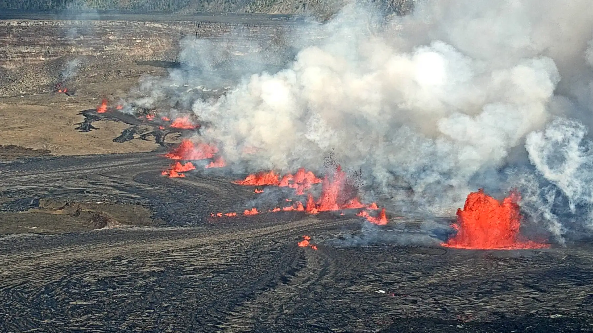
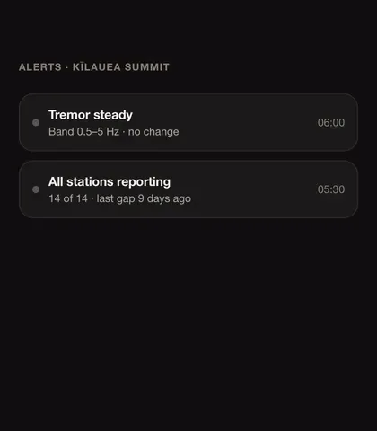

Ridge
Know before it moves.
Fourteen instruments on the mountain. One number on your screen.

Ridge
Fourteen instruments on the mountain. One number on your screen.
A volcano announces itself in millionths of a degree, hours before anything reaches the surface.


14
instruments, summit to coast
1 s
from the ground to your screen
19 min
median warning, last eleven events
9 d
longest gap in four years of record
The rim
A tiltmeter buried on the caldera rim reads the ground swelling as magma moves beneath it. The signal is a few microradians — a slope change you could not see if you were standing on it.
Ridge sinks the sensor two metres into rock, below the layer that moves with the weather, and leaves nothing above ground but a mast.

The rift
In 2018 twenty-four fissures opened across the lower East Rift Zone in six weeks. Stations went down with the ground they were standing on.
Every Ridge node carries its own power, its own clock and four days of storage, and routes to any two neighbours. Losing one station costs you one station.

The field
Nobody services an instrument on a lava field in good conditions. One captive screw, one connector, one battery pack that comes out with a gloved hand and goes back in the wrong way round without breaking anything.
The log of what was changed is written on the node and again at the summit, so a swap made at 4am is still a swap you can read in the record a year later.



Scroll.
Every one is a crack that has not closed.



Every number on this page is one the network recorded, with the station and the hour it came from.
Deployments start at a pair: one at the source, one where you need the warning.
Ridge is a fictional product, invented so this page has something to sell. The photographs are real: U.S. Geological Survey, the National Park Service and the Hawaiian Volcano Observatory, all public domain. The interface clips were rendered from the scenes in example/scenes/.
No real instrument, price or deployment is described here, and the numbers belong to the invented product. This page is a design example: it carries no Apple font, image, icon or wordmark, and the type scale, rhythm and motion are the measured system described in the skill.
.jpg){kind=link}

.jpg){kind=link}
.jpg){kind=link}

.jpg){kind=link}
.jpeg){kind=link}